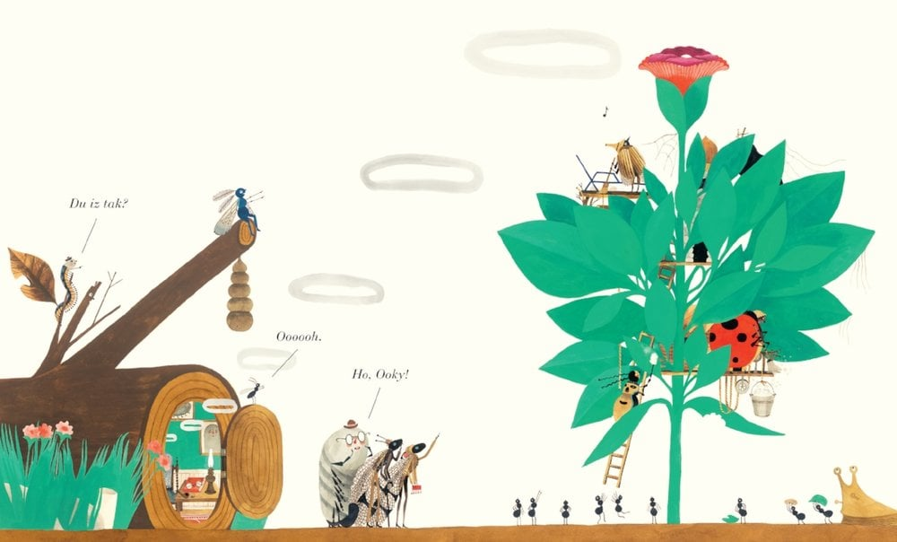

Flawed as the Oscars and other award shows like them are, I look forward to the reveal of the nominations every year—after which my husband and I set out to watch as many of the films as we can ahead of the ceremony. Who doesn’t need something to do on these cold, dark days?
We got a head start this year thanks to a list my colleagues compiled of their favorite 2022 movies. Though we’ve still got a ways to go, I can’t imagine a more compelling, masterful, heart-wrenching, beautifully acted movie than Everything Everywhere All at Once. (Anyone else thinking a lot about laundry and taxes lately? *sniff*) And while I don’t think I’ve ever watched a war movie in its entirety (whose heart can handle all that??), my colleague Allan suggests making an exception below. I’ll think about it. We also round up other things to watch and read and make our picks for the acting performances you shouldn’t miss.

Best acting performances in 2022

Many people don’t like to watch war movies, but they should consider making an exception for the October 2022 version of All Quiet on the Western Front (distributed by Netflix). The movie, the first non-English-language adaption of the classic German anti-war novel, received nine Oscar nominations, including best picture. The brutal subject matter remains as timely as ever. (See this interview with the director.)
Allan Gold
senior advisor
Go to Allan’s pick


Film and television adaptations of video games have been notoriously atrocious for decades. So when HBO announced it was adapting one of the premier narrative-driven video game franchises, The Last of Us, it was met with great skepticism. Pedro Pascal and Bella Ramsey’s takeover of lead characters Joel and Ellie—who were voiced by Troy Baker and Ashley Johnson in the game—would be no easy feat. Though confidence grew over time as fans learned Craig Mazin (of Chernobyl fame) and original writer Neil Druckmann would be the series’ showrunners.
Two episodes in, it’s clear that the showrunners were spot on with their casting for this frightening apocalyptic world. Fans of the game are all but unanimously praising not only the performances but also the accuracy of the story. While full of little easter eggs for players of the game, this is an independent telling of the story, and the energy of the two leads as well as the wonderful (and terrifying) world building will keep watchers hooked.

Go to Boris’s pick
Boris Strelchin
controller
KC Esper
editor
“The Crane Wife” by CJ Hauser is not a new essay, but a friend forwarded it to me recently, and it felt more relevant than ever. This is for anyone going through big life changes or postpandemic self-rediscovery. It’s thoughtful, funny, deeply human, and inspiring. Definitely worth a read.
Go to KC’s pick
Do you love words? Or do you love pictures? Either way, how about jumping into a landscape of beautiful images and sounds that you intuitively grasp, even though the words are nonsense—evoking language yet belonging to no language? I read the book Du Iz Tak?, written and illustrated by Carson Ellis, to my two-year-old granddaughter, and she got it immediately. The intricate illustrations of damsel flies, beetles, a fiddle-playing cricket, a pill bug reclining on a lawn chair, and a glorious art deco bloom are reason enough to enjoy this book. Sophisticated design, elegant storytelling, a seasonal dramatic arc. Even if you have no young ones in your life, I recommend you buy this book and take a break from terse digital interactions and endless random scrolling to remember the wonder and delight that’s out there waiting for us to see it.
Go to Mary’s pick
Mary Reddy
senior adviser



Jen B:
Austin Butler in Elvis
Boris:
Ke Huy Quan in Everything Everywhere All at Once
Alia:
Cate Blanchett in Tár and Paul Mescal in Aftersun
Justin:
Angela Bassett in Black Panther: Wakanda Forever